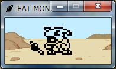
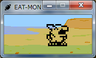

デジモンデスクトップアクセサリ
「食べるモン」
記事作成 : 2015/1/2(金)
概要
ずいぶんと前に作ったゴミ箱プログラムです。 ファイルをドラッグ＆ドロップするとデジモンがエサを食べるモーションを行い、ファイルが削除されます。 ファイルはゴミ箱に移動するわけではなく、完全に抹消されてしまうのでうっかり大切なファイルを削除しないよう注意してください。 ガブモンバージョンとギルモンバージョンの2種類があります。
- 使用言語 : C++言語
- 動作環境 : Windows XP, Vista, 7, 10
[スクリーンショット]
 [ダウンロード]
Tweet